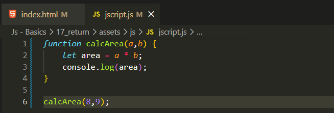
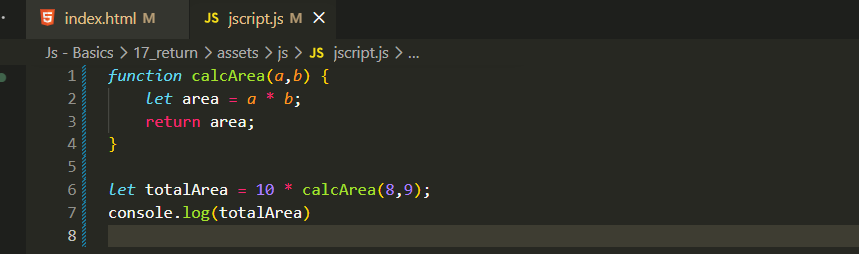

Return
Intro
Iremos relembrar funcoes mas agora com uso de return.
Iremos relembrar funcoes mas agora com uso de return.
Iremos usar como exemplo a mesma funcao que haviamos ja feito, sob calcular area de um retangulo, basicamente nele podemos observar que ele faz o calculo multiplicando a largura * altura e no final apenas imprime o valor do resultado

Se precisarmos reutilizar esse codigo por exemplo com 10 mesas com essa mesma area, basicamente nao sera possivel pois nesse codigo estamos apenas imprimindo o valor na tela, caso precisemos reutilizar essa funcao para que ela tenha um retorno para reutiliza-lo em outra expressao, iremos precisar usar a palavra reservada return e passamos a area como return.
